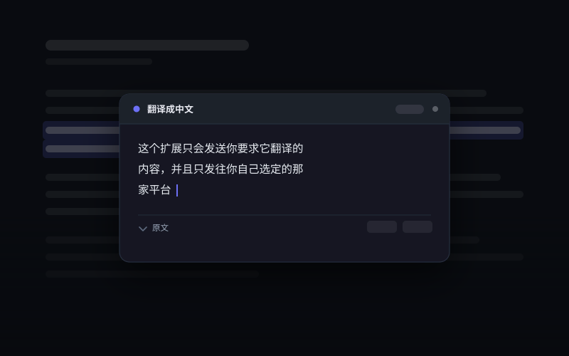

01
划词翻译
选中一段非中文文字，右键点「翻译成中文」，译文在屏幕中央的弹窗里逐字出现。
- 选中的本来就是中文时菜单不出现，纯数字、标点、表情同理
- 弹窗居中且可拖动，Esc 或点背景关闭，不是追着光标跑的小气泡
- 可折叠的原文面板，对照着读
- 也有快捷键：Alt+Shift+T（macOS 为 Command+Shift+Y）
演示视频占位
assets/demo-selection.mp4
一个 Chrome 扩展。网页里的外文、整块区域、甚至图片里的文字，都能就地译成中文。译文逐字流式出现，用的是你自己的 API Key——中间不经过任何服务器。

Features
不用切换标签页，不用复制粘贴。看不懂的那一段在哪，翻译就发生在哪。
01
选中一段非中文文字，右键点「翻译成中文」，译文在屏幕中央的弹窗里逐字出现。
02
右键页面上的某个区域，给它挂一个翻译按钮。点一下，区域里的文字就地换成中文。
03
右键一张图片，识别图里的文字，再把译文按识别到的位置盖回原图上。
04
一个独立页面，左边贴原文右边出译文，适合处理成段的、不在网页上的文字。
Privacy
只有你主动触发翻译时，内容才会发出去，并且只发往你自己选定的那家平台。这不是一句承诺，是可以照着源码逐行核对的事实。
整个项目只有一处 fetch 调用，写在 src/lib/providers.js 里，只发往你在设置中选的那家平台。其余代码没有任何网络请求。
作者不运营任何服务器，也没有统计、埋点、广告或第三方 SDK。你翻译过什么，这边无从知道。
API Key 存在 chrome.storage.local，不走 Chrome 账号同步，只用于向你选的平台鉴权。卸载扩展即一并清除。
完整说明见仓库里的隐私政策（中英双语），以及 GPL-3.0 下公开的全部源码。
Install
目前以开发者模式加载。需要 Chrome 116 或更高版本，以及一个你自己的 API Key。
支持接入 ChatGPT（OpenAI）与 DeepSeek 的 API，随时可以切换。两者都默认选用各自最便宜的档位——翻译是高频、短输入的活，没必要上贵的。